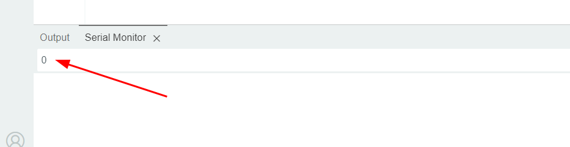

Über die Serielle Schnittstelle kann der Arduino Daten mit dem Computer austauschen.
Wir untersuchen, in welcher Form der Arduino Daten vom Computer empfängt.
int zeichen = 0; // Datenbyte vom Seriellen Eingang
String txt = ""; // Ausgabe als Text
void setup() {
Serial.begin(9600); // Serielle Schnittstelle öffnen
}
void loop(){
if (Serial.available() > 0) { // Serielle Daten liegen an
zeichen = Serial.read();
Serial.println(zeichen);
}
}
Lade das Programm auf den Arduino hoch und öffne die Serielle Schnittstelle.
Trage die Ziffer "0" ein und drücke Return, um sie über die Serielle Schnittstelle an den Arduino zu senden:

Sende folgende Zeichen an den Arduino: